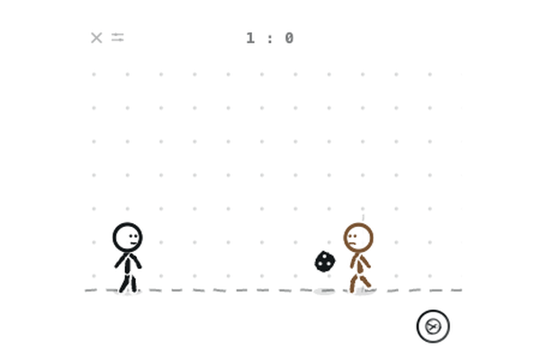
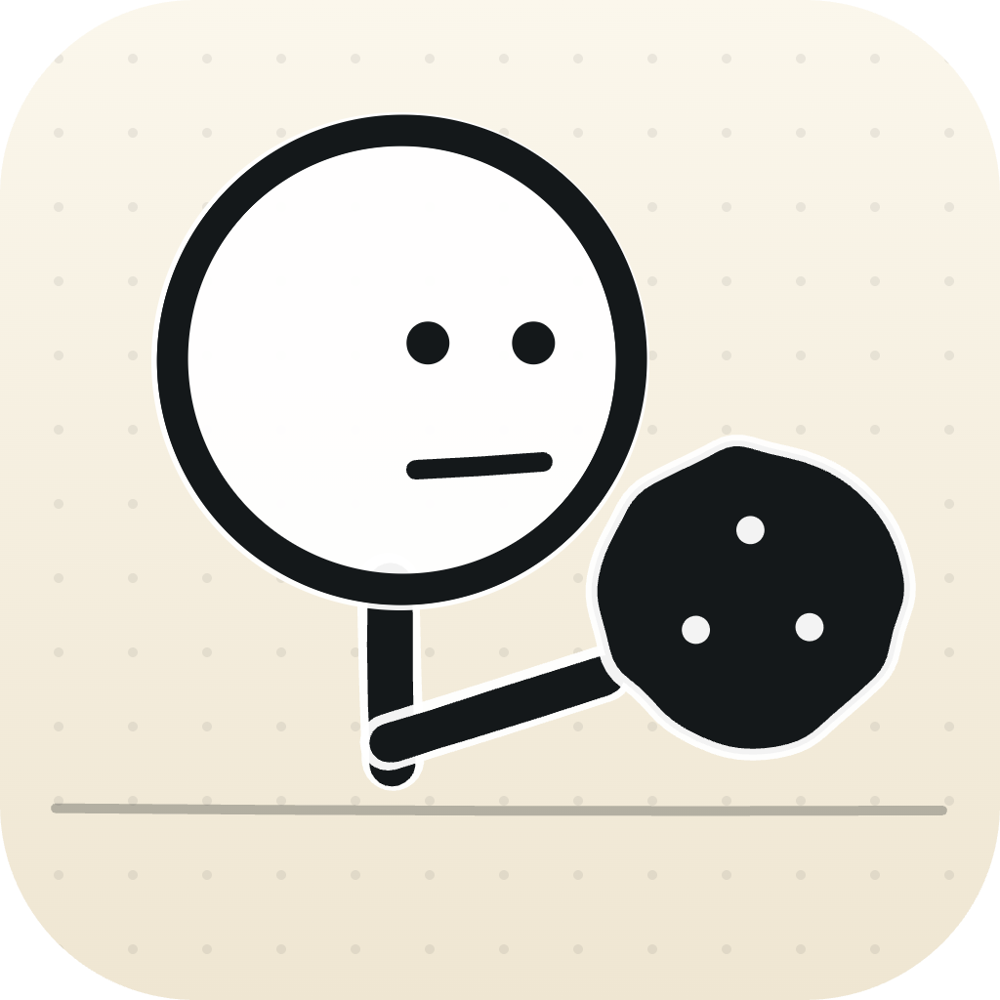
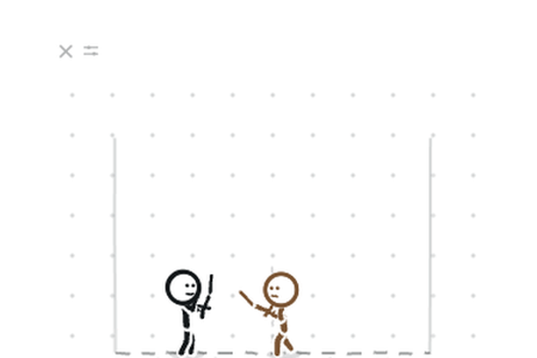
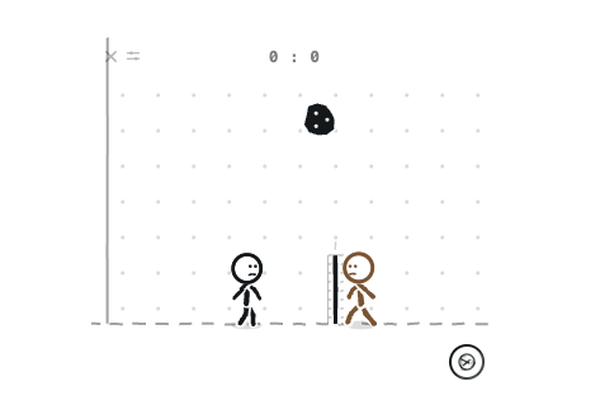

01 / FOOTBALL

축구
1 : 1공을 차고, 골은 시원하게.
먼저 5골을 넣으면 오늘의 승자.

오버레이 루팡OVERLAY LUPIN 다운로드분명 방금까지 일하고 있었는데.
화면 한구석에서 시작되는 옆자리와의 한 판.
같은 Wi-Fi라면, 우리 사이에 준비는 끝.
대충 그린 것 같아도,
승부는 제법 진지합니다.

공을 차고, 골은 시원하게.
먼저 5골을 넣으면 오늘의 승자.

막을까, 찌를까. 눈치가 곧 실력.
옆자리의 빈틈을 노려보세요.

받아 올리고, 힘껏 스파이크.
먼저 5점을 내면 오늘의 승자.
내 컴퓨터에 맞는 버전을 설치해요.
게임 계정을 만들 필요는 없어요.
친구와 같은 네트워크에 접속하면
서로를 자동으로 찾아줘요.
게임을 고르고 대전을 신청해요.
이제 작은 화면에서 크게 놀 시간.
작은 놀이터 하나, 내 화면에 들여놓기.
GitHub에서 최신 릴리스를 확인하세요.Windows 설치 파일의 코드 서명은 SignPath Foundation의 오픈소스 지원으로 제공됩니다 (SignPath.io 인프라 사용).
한 판 하고, 한마디.
짜릿했던 승리, 아쉬웠던 한 판, 다음에 하고 싶은 게임까지.
작은 의견도 반갑게 읽을게요.
루팡들의 방명록
닉네임만 적고 익명으로 남길 수 있어요.